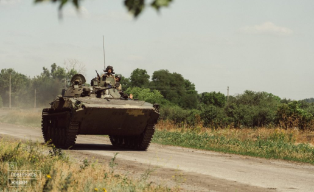

ЯК ДІЯТИ В УМОВАХ ЗАТЯЖНОЇ ВІЙНИ РФ З УКРАЇНОЮ. ОГЛЯД ЗАХІДНОЇ АНАЛІТИКИ

Команда Фонду компетентної допомоги армії «Повернись живим», завдяки народній підтримці, придбала 10 безпілотних комплексів PD-2 із пересувними наземними станціями, загальною вартістю приблизно у 300 мільйонів гривень, або 8,5 мільйонів доларів.
PD-2 коригуватимуть, зокрема, американські ракетні артилерійські системи HIMARS.
Про це організація повідомила на своїй офіційній сторінці у Facebook.
10 комплексів — це 20 літаків PD-2 і 10 автівок-наземних станцій, переобладнаних у пересувні командні пункти управління.
Нагадаємо, PD-2 — це багатоцільові, найперше, розвідувальні безпілотні комплекси вітчизняного виробництва. Розроблені українськими «UkrSpecSystems», вони не просто зконструйовані нашими — вони буквально зроблені в Україні. Ці безпілотники — одні з кількох БПЛА українського виробництва з радіусом польотів у понад 200 кілометрів. PD-2 має двигун внутрішнього згоряння, відтак, у порівнянні з електричними літаками, долає значно більші дистанції. Сумарна протяжність маршруту PD-2 (на одному баку) може сягати 1000 і більше кілометрів. Для взлету PD-2 не потрібен аеродром. Ці БПЛА мають шасі і злітають вертикально.
PD-2 може працювати у повітрі до 12 годин. БПЛА обладнані якісним цільовим навантаженням. Їхні камери мають п’ятикратний оптичний зум на тепловізорі і збільшення на денній камері до 30 крат. Що це дає? PD-2 може чітко визначати координати об’єктів у кадрі на відстані понад 5 кілометрів
Безпілотник використовує військові стандарти зв’язку з псевдовипадковим перелаштуванням робочої частоти (ППРЧ), максимально захищений від дії ворожого РЕБу, і це робить його стійким до подавлення як навігації, так і каналів керування. Також PD-2 автоматично відслідковують переміщення цілей. Якщо, скажімо, російський танк буде рухатися у кадрі — камера БПЛА автоматично може рухатися за ним.